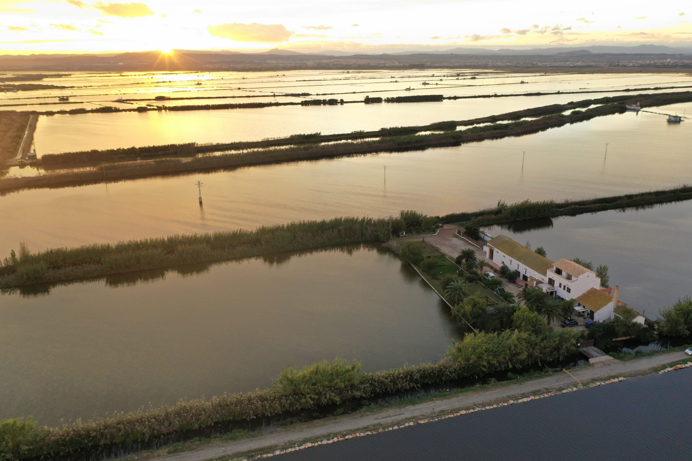

Resumen del día
Tres tiempos, un solo itinerario
La jornada se construye en tres tiempos: la mañana deportiva en el templo del Valencia C.F., el mediodía en la Albufera, entre arroz y naturaleza, y la tarde-noche de descanso frente al mar, en Las Arenas. Cada tramo tiene su propio ritmo — y entre ellos, únicamente el paisaje cambiando al otro lado de la ventanilla del bus.
09:00
Llegada · Las ArenasCheck-in y acreditaciones del grupo
10:30
Tour + fútbol en MestallaO partido directo en la Ciudad Deportiva
13:40
Barca hacia el TancatTravesía por l'Albufera
14:20
Concurso de paellas o sobremesa en calmaEntrantes, paella y postre en ambos casos
16:30
Regreso a Las ArenasTarde libre: spa, playa o jardines
Noche
Cena buffet y descansoSin planes, sin horarios
10:30 +1
Fin de la experienciaDesayuno tranquilo y salida a su ritmo
01 · Mañana
Mestalla o Ciudad DeportivaVestuarios, túnel y partido amistoso — o una versión más ágil y directa
02 · Mediodía
El Tancat de l'AlbuferaOcho hectáreas entre el agua y el cielo, con más de 350 especies de aves
03 · Tarde-noche
Gran Hotel Las ArenasSpa, playa y jardines, con cena buffet frente al Mediterráneo
01 · La mañana — 09:00 – 13:00
Con el balón como protagonista
Dos maneras de vivir la mañana futbolera, igual de cuidadas: la experiencia completa en el estadio de Mestalla, o una versión más ágil y directa en la Ciudad Deportiva, casa del día a día del primer equipo. Se elige una sola — el resto del día es idéntico para todos.
Experiencia completa
Tour y partido en Mestalla
Vestuarios, túnel, banquillo y palco, hasta pisar la hierba del estadio. Después, partido amistoso dentro del propio Mestalla y almuerzo en las instalaciones.
Directa al partido
Partido en la Ciudad Deportiva
Sin visita guiada: se juega directamente en los campos donde entrena el primer equipo. Más ágil, más económica, la misma energía.
03 · Valencia · Un día, tres mundos
Opción A · Mestalla
Del vestuario al
terreno de juego
El grupo entra por donde entran los jugadores: vestuarios, túnel, banquillo y palco, hasta pisar la hierba del campo.
Después de la visita guiada, quien quiera se calza las botas para un partido amistoso dentro de las instalaciones — a otro ritmo para quien prefiera quedarse mirando desde la grada. Al acabar, un almuerzo en las propias instalaciones antes de ducharse, cambiarse y salir hacia l'Albufera.
09:45
Salida en bus desde Las Arenas — check-in ya realizado
10:30
Tour guiado por las instalaciones
12:00
Partido amistoso en el campo
12:45
Almuerzo en las instalaciones de Mestalla
13:15
Ducha, cambio y salida hacia l'Albufera
La casa del Valencia C.F., abierta para el grupo.04 · Boost Wellness
Opción B · Ciudad Deportiva
Todo el juego,
sin rodeos
El bus deja al grupo directamente en los campos donde el Valencia C.F. entrena cada semana.
Sin visita guiada, el balón empieza a rodar poco después de llegar: es la misma emoción de jugar como profesionales, en un formato más corto y accesible — ideal si el presupuesto o el tiempo piden una mañana más ligera sin renunciar a nada esencial. Después del partido, almuerzo en la propia Ciudad Deportiva antes de poner rumbo a l'Albufera.
09:45
Salida en bus desde Las Arenas — check-in ya realizado
10:15
Llegada a la Ciudad Deportiva
10:30
Partido amistoso en los campos del primer equipo
11:45
Almuerzo en la Ciudad Deportiva
12:30
Ducha, cambio y salida hacia l'Albufera
Misma energía, formato más ágil y económico.05 · Boost Wellness

Ocho hectáreas entre el agua y el cielo, a las puertas de la ciudad
02 · Mediodía — 13:40 – 16:30
El Tancat de l'Albufera:
un oasis natural
Más de 350 especies de aves —algunas en peligro de extinción— rodean sus ocho hectáreas. Garzas reales y flamencos cruzan el cielo mientras se camina entre el horno moruno y las caballerizas originales: un espacio histórico donde la belleza natural del Parque se combina con el carácter de lo auténtico.
02 · Mediodía · Sobremesa
Dos maneras de vivir la sobremesa
13:40 llegada al Tancat · 14:00 travesía en barca · 14:20 bienvenida con aguas, vino y refrescos · 14:20–16:30 entrantes, paella y postre · 16:30 el bus recoge rumbo a Las Arenas.
Espíritu de equipo
Concurso de paellas
El grupo se divide en equipos y cocina su propia paella, guiado por el equipo del Tancat. Se compite, se comparte y, al final, todos comen lo que han preparado.
Pura desconexión
Sobremesa en calma
Para quien prefiera desconectar: mesa junto al agua, entrantes, paella y postre, con las garzas y flamencos como único espectáculo.
07 · Boost Wellness
03 · Tarde-noche — 16:30 – día siguiente 10:30
Frente al mar,
sin prisa
De vuelta en Las Arenas, cada uno decide su ritmo — el cierre de un día intenso, en la playa de Valencia.
Circuito de spa y masajes para quienes buscan seguir relajándose, o un paseo junto al mar y por los jardines del hotel para quien prefiera aire libre. Al caer la noche, cena buffet con vistas a la playa y a descansar — sin planes, sin horarios.
16:30
Llegada a Las Arenas — tarde libre
Tarde
Spa & bienestar, o playa & jardines, a elección de cada uno
Noche
Cena buffet con vistas a la playa de Valencia
Libertad para elegir cómo desconectar.08 · Boost Wellness
03 · Tarde-noche · Las Arenas
Spa, playa y mesa con vistas
El circuito termal, los masajes y las salas de aguas del balneario tienen vistas al Mediterráneo; quien prefiera, sale a pasear por la arena o por los jardines interiores del hotel, a la hora que cada uno quiera.
01
Spa & bienestar
Circuito termal, masajes y salas de aguas del balneario, con vistas al Mediterráneo.
02
Cena frente al mar
Buffet con vistas a la playa de Valencia, y a la arena y los jardines interiores del hotel para pasear.
03
Un cierre sin prisa
Desayuno tranquilo a la mañana siguiente y fin de la experiencia, cada uno a su ritmo.
09 · Boost Wellness
Día siguiente
Un cierre sin prisa
Después de un día completo entre el fútbol, el agua y la sobremesa, la última mañana se deja en blanco a propósito: sin actividades programadas, para que el grupo decida cómo despedirse de Valencia.
01
09:30 · Desayuno tranquilo
Servido en Las Arenas, con vistas a la playa de Valencia y sin horario cerrado.
02
10:30 · Fin de la experiencia
Cada uno a su ritmo: check-out, traslados o unas horas más disfrutando del hotel.
03
Equipaje y traslados
Coordinamos salidas escalonadas hacia el aeropuerto, la estación o donde el grupo lo necesite.
Lo más importante
"Un día, tres mundos: fútbol, Albufera y mar — sin prisa, sin extremos, con la calidad de detalle de una experiencia diseñada a medida."
10 · Boost Wellness